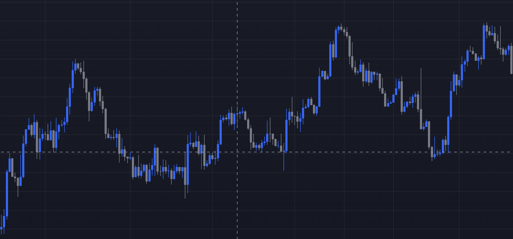

Forex Trading for a living
The main goal of foreign exchange trading is to make profit buying a currency at a lower price and selling it at a higher price. Traders use various strategies and tools to analyze the market and make informed decisions about when to buy or sell currencies.

Above we can see the Japanese-Candlesticks EUR/USD chart, which is a price chart used by traders to track the exchange rate of the euro against the US dollar. It displays the historical price movements of the EUR/USD currency pair over a certain period of time, such as days, weeks, or months, and can be used to analyze market trends and identify potential trading opportunities. By examining the chart, traders can gain insight into the strength of the euro and the US dollar, as well as the overall sentiment of the forex market.
Major Currency Pairs in Forex Trading
In foreign exchange market, there are several currency pairs that can be traded. The major currency pairs are the most commonly traded pairs, and they consist of:
- EUR/USD (Euro/US dollar)
- USD/JPY (US dollar/Japanese yen)
- GBP/USD (British pound/US dollar)
- USD/CHF (US dollar/Swiss franc)
- AUD/USD (Australian dollar/US dollar)
- USD/CAD (US dollar/Canadian dollar)
- NZD/USD (New Zealand dollar/US dollar)
These currency pairs are considered major because they represent the world's largest economies and have the highest trading volumes in the market. As a result, they tend to be more liquid and have narrower bid-ask spreads, making them more attractive to traders.
Exotic Currency Pairs in Forex Trading
In addition to the major currency pairs, there are also exotic currency pairs in the forex market. These currency pairs involve a major currency and a currency from a developing or emerging economy. Some examples of exotic pairs include:
- USD/MXN (US dollar/Mexican peso)
- USD/ZAR (US dollar/South African rand)
- USD/BRL (US dollar/Brazilian real)
- EUR/TRY (Euro/Turkish lira)
- USD/THB (US dollar/Thai baht)
Exotic pairs are less traded because of their lower volume and wider bid-ask spreads compared to the major pairs. This can present unwanted, higher risks for traders.
GitHub profile Aggelos2000430
Site's Repository in GitHub
E-mail: parodiesfactory@gmail.com
This site was generated with a shell script within the course of the subject SoftWare